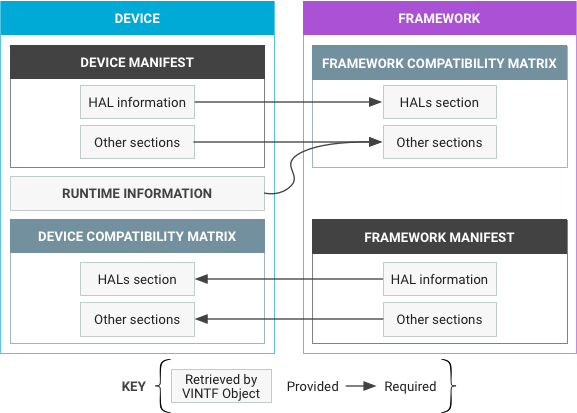

This document describes the design of the vendor interface object (VINTF object), which aggregates relevant information about a device and makes that information available through a queryable API.
A VINTF object gathers some of the information it needs directly from the device. Other aspects, such as the manifests, are described statically in XML.
VINTF object design provides the following for device and framework components:
| For the Device | For the Framework |
|---|---|
|
|
The VINTF object must be reliable and provide the same complete information regardless of when the object is requested (see Caveats).
Android O requires an API at runtime to query what is on the device and send
that information to the Over-the-Air
(OTA) update server and other interested parties (such as CTS
DeviceInfo). Some information is retrieved at runtime and some of
it is statically-defined.
These two pairs of manifests and matrices must be reconciled at OTA time to ensure a device can get framework updates that are compatible with the device's capabilities. In general, a manifest describes what is provided and a compatibility matrix describes what is required.
VINTF Object Data defines the schema for the manifest, Compatibility Matrices defines the schema for the compatibility matrix, and Matching Rules defines the rules for a successful match between a compatibility matrix and a manifest.